Utforskende dataanalyse
Contents
import numpy as np
import pandas as pd
import scipy.stats as stats
from sklearn.datasets import load_diabetes
import plotly.express as px
import plotly.graph_objects as go
import plotly.io as pio
pio.renderers.default = "svg"
Utforskende dataanalyse#
Utforskende dataanalyse refererer til et sett med prosedyrer for å produsere beskrivende og grafiske sammendrag av data. Fordelen med utforskende dataanalyse er at den lar deg undersøke dataene slik de er uten å gjøre noen antagelser. Det er en nyttig måte å undersøke data for å forstå sammenhenger mellom variabler og identifisere eventuelle problemer og feil i data.
Utforskende dataanalyse tar bruk av hovedsakelig de vitenskapelige disiplinene sannsynlighetsteori, statistikk, visualisering og uveiledet maskinlæring.
Sannsynlighet#
Nesten alle steder der vi bruker data science må vi håndtere usikkerhet.
For eksempel hvis vi måler blodtrykket hos legen så får vi forskjellige svar om vi har satt på legekontoret i en halv time før blodtrykket ble målt eller om vi måtte løpe for å rekke legetimen og så ble blodtrykk målt kort tid etter vi kom os til legekontoret. Hvis vi prøver å finne ut om pasienten er sykk, så er denne forskjellen bare støy som kan forvirre modellene.
Usikkerhet i data fører også til usikkerhet i konklusjonene våre. Hvis vi lager en modell for å predikere om det regner i morgen eller ikke og får svar at det mest sannsynlig ikke regner, så er det en stor forskjell mellom en 5% sannsynlighet for regn og en 40% sannsynlighet for regn.
Språket for å håndtere usikkerhet er sannsynlighetsteori, en grein av matematikk som formaliserer sannsynligheter. I sannsynlighetsteori beskrives stokastiske variabler gjennom sannsynlighetsrom og målbare funksjoner. Vi har følgende abstrakte definisjonen:
En stokastisk variabel \(X \colon (\Omega, \mathcal{F}, P) \to E\) er en målbar funksjon fra et sett mulige utfall til et målbart rom \(E\).
Sannsynligheten at \(X\) tar en verdi i et målbart sett \(S \subseteq E\) er
\[ P(X\in S) = P(\{\omega \in \Omega \mid X(\omega) \in S\}) \in [0, 1]\]
For å forstå definisjonen, la oss se på noen eksempler.
Terningkast: Når vi har terninger, så er de mulige utfall terningkast 1 til 6, så \(\Omega = \) {⚀, ⚁, ⚂, ⚃, ⚄, ⚅}. Siden det bare er endelig mange mulige utfall, er mengden \(\mathcal{F}\) er alle mulige undermengder av \(\Omega\). Hvis du kaster terningen og får en ⚃, er verdien til \(X\) lik \(4\). Hvis du kaster terningen igjen og får en ⚁, er verdien til \(X\) lik \(2\). Sannsynligheten for en av de mulige delmengdene er i dette tilfelle bare størrelsen av mengden delt på total antall mulige utfall, altså \(P(A) = \frac{\vert A \vert}{6}\) for \(A \in \mathcal{F} \). Hvis vi for eksempel vil finne sannsynligheten for å trille et oddetall, så har vi \(P\)({⚀, ⚂, ⚄}) \(= \frac{3}{6} = 0.5\).
Ventetid: Tenk deg at du venter på bybanen. La den stokastiske variabelen \(X\) representere «ventetiden i minutter fra du ankommer bybanestoppet til bybanen kommer». Hvis du akkurat har kommet til bybanestoppet og bybanen kommer med en gang, er \(X=0\) minutter. Hvis du må vente litt, kan \(X\) for eksempel være 4 minutter. Hvis vi antar at bybanen kommer nøyaktig hver tiende minutt og du kommer på et tilfeldig tidspunkt, så kan vi for eksempel se på sannsynlighet for å måtte vente mindre enn eller lik 3 minutter \(P(X\leq3) = \frac{3}{10} = 0.3\) eller på sannsynligheten for å måtte vente mellom 4 og 8 minutter \(P(4<X\leq 8) = \frac{8-4}{10} = 0.4\).
Sannsynlighetsfordeling#
I disse forelesningsnotatene bruker vi bare stokastiske variabler med reelle verdier (\(E = \mathbb{R}\)) som vi kan beskrive ved hjelp av en fordelingsfunksjon. Den kumulative fordelingsfunksjonen \(F\) defineres gjennom at \(F(x)\) er sannsynligheten at den stokastiske variabelen er mindre enn lik \(x\), altså $\(F(x) = P(X \le x).\)$ Det følger direkte fra definisjonen at fordelingsfunksjoner tar verdier mellom 0 og 1 og er monotont stigende.
Hvis vi går tilbake til terningene, så blir altså fordelingsfunksjonen som følgende:
N = 1001
x = np.linspace(-1, 7, N)
Fx = np.clip(np.ceil(x)/6, 0, 1)
fig = px.line(x=x, y=Fx, labels={'x': 'x', 'y': 'F(x)'})
fig.show()
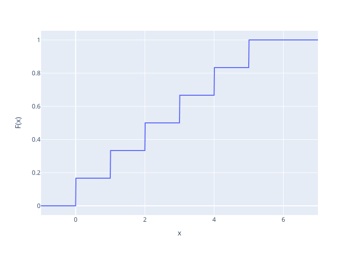
For eksempelet med ventetid der bybanen kommer nøyaktig hver 10. minutt, så blir det følgende fordelinsfunksjon:
x = [-5, 0, 10, 15]
Fx = [0, 0, 1, 1]
fig = px.line(x=x, y=Fx, labels={'x': 'x', 'y': 'F(x)'})
fig.show()
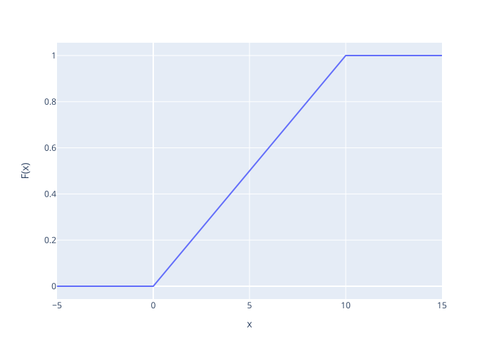
Denne fordelingen heter også uniformfordeling mellom 0 og 10.
I tillegg til fordelingsfunksjonen bruker vi også andre funksjoner for å beskrive fordelinger. Diskrete fordelinger (altså fordelinger med endelig mange mulige utfall) kan beskrives med hjelp av sannsynlihgetsmassefunksjonen. Det er bare sannsynligheten for at en stokastisk variabel er akkurat x.
For terningskasteksempelet, er sannsynlighetsmassefunksjonen
Så blir fordelingsfunksjonen summen av sannsynlighetsmassefunksjonen for alle verdiene mindre enn x, altså
For kontinuerlige stokastiske variabler fungerer ikke dette helt. Men vi kan generalisere det med en tetthetsfunksjonen. Det er en funksjon som har den lignende egenskapen at fordelingsfunksjonen er integralet over tetthetsfunksjonen for alle verdiene mindre enn x,
Tetthetsfunksjonen er altså definert gjennom denne egenskapen. Men den har ikke interpretasjonen at det er sannsynligheten for en bestemt verdi.
Hvis vi vil regne ut sannsynligheten av en hendelse, så kan vi gjøre det ved å summere eller integrere over alle utfall i denne hendelsen
Nå ser vi på flere sannsynlighetsfordelinger.
Binomisk fordeling: Hvordan beregner vi sannsynligheten for å få 2 kron i 3 myntkast? Mer generellt, hva er sannsynligheten for å ha eksakt \(k\) kron blant \(n\) myntkast med mynter som har en sannsynlighet å få kron som er \(p\)? For å svare på det spørsmålet kan vi bruke den binomiske fordelingen med sannsynlighetsmassefunksjonen $\( f(k) = \binom{n}{k} p^k(1-p)^{n-k}.\)$
Her er grafen av sannsynlighetsmassefunksjonen for \(n=20\) og \(p=0.3\).
k=np.arange(20)
fk=stats.binom(20, 0.3).pmf(k)
fig = px.bar(x=k, y=fk, labels={'x': 'x', 'y': 'f(x)'})
fig.show()
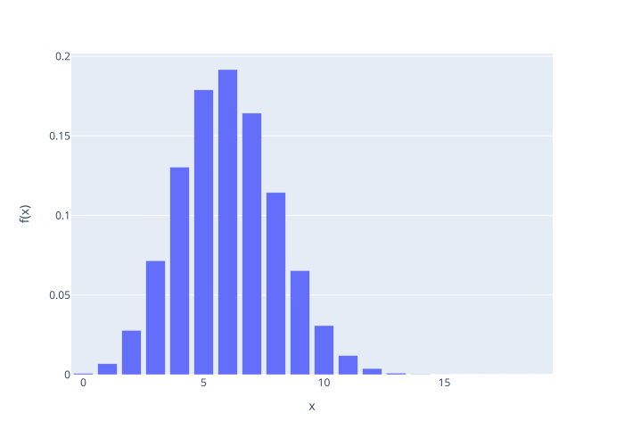
Normalfordeling: Normalfordelingen er en av de mest brukte kontinuerlige fordelingsfunksjonene. Formelen for tetthet har er
mu = 2
sigma = 0.5
N = 1001
x = np.linspace(mu-3*sigma, mu+3*sigma, N)
fx = stats.norm(mu, sigma).pdf(x)
fig = px.line(x=x, y=fx, labels={'x': 'x', 'y': 'f(x)'})
fig.update_layout(
xaxis = dict(
tickmode = 'array',
tickvals = [0.5, 1, 1.5, 2, 2.5, 3, 3.5],
ticktext = [r'$\mu-3\sigma$', r'$\mu-2\sigma$', r'$\mu-\sigma$', r'$\mu$', r'$\mu+\sigma$', r'$\mu+2\sigma$', r'$\mu+3\sigma$']
)
)
fig.show()
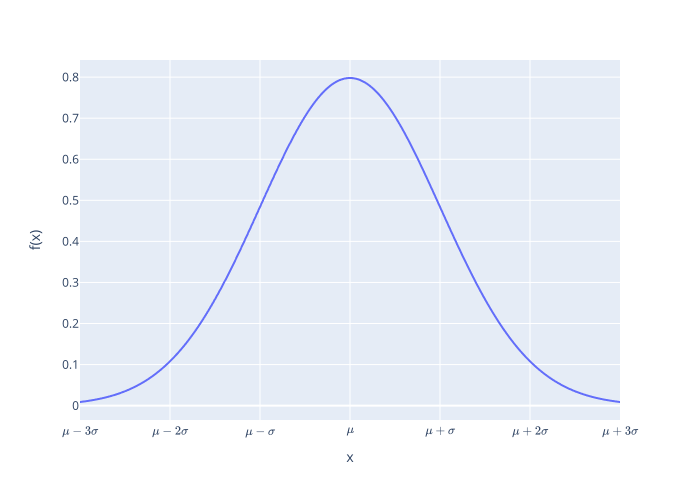
Her er grafen av tetthetsfunksjonen. Funksjonen er sentrert ved \(\mu\) og \(\sigma\) bestemmer hvor stor spredning det er. 67% av masse er mellom \(-\sigma\) og \(\sigma\). 95% av massen ligger mellom \(-2\sigma\) og \(2\sigma\).
Fx = stats.norm(mu, sigma).cdf(x)
fig = px.line(x=x, y=Fx, labels={'x': 'x', 'y': 'F(x)'})
fig.update_layout(
xaxis = dict(
tickmode = 'array',
tickvals = [0.5, 1, 1.5, 2, 2.5, 3, 3.5],
ticktext = [r'$\mu-3\sigma$', r'$\mu-2\sigma$', r'$\mu-\sigma$', r'$\mu$', r'$\mu+\sigma$', r'$\mu+2\sigma$', r'$\mu+3\sigma$']
)
)
fig.show()
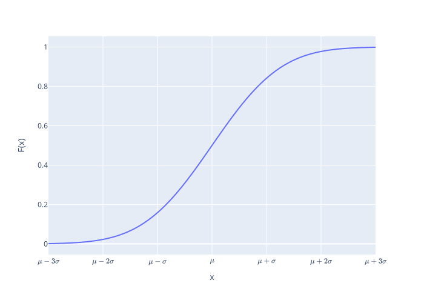
Her er fordelingsfunksjonen for normalfordelingen.
Forventningsverdi#
Forventningsverdien \(E[X]\) av en stokastisk variabel \(X\) er et mål på det gjennomsnittlige utfallet man kan forvente av en stokastisk variabel over mange gjentatte eksperimenter. Uformelt så er forventningsverdien en vektet gjennomsnitt av alle mulige verdiene den stokastiske variabelen kan ta, vektet med sannsynligheten for å ha denne verdien. Mer presist, så skiller vi mellom diskrete og kontinuerlige stokastiske variabler. For diskrete stokastiske variabler er det
og for kontinuerlige stokastiske variabler er det
La oss bruke buss-eksempelet fra tidligere: Anta at bussen kommer nøyaktig hvert 10. minutt, og at du kommer til bussholdeplassen på et tilfeldig tidspunkt. Ventetiden \(X\) er da uniformt fordelt mellom \(0\) og \(10\) minutter.
For å finne forventningsverdien \(E[X]\) for ventetiden, har vi
Dette betyr at hvis du gjentatte ganger ankommer bussholdeplassen på tilfeldig tidspunkt, vil du i gjennomsnitt vente 5 minutter på bussen.
Varians#
Varians er forventet kvadratavvik fra forventningsverdien
Det er et mål på hvor mye verdiene til en stokastisk variabel avviker fra forventningsverdien og gir en indikasjon på hvor spredd dataene er rundt gjennomsnittet. Jo større varians, desto større er spredningen.
Igjen kan vi regne det ut på litt forskjellige måter for diskrete og kontinuerlige stokastiske variabler. For en diskrete stokastisk variabel \(X\) med forventningsverdi \(\mu\) kan vi regne ut varians som
For en kontinuerlig stokastisk variabel \(X\) med forventningsverdi \(\mu\) blir det
La oss igjen bruke buss-eksempelet med ventetiden \(X\) som er uniformt fordelt mellom \(0\) og \(10\) minutter. Tidligere har vi regnet ut at forventet ventetid \(E[X]\) var 5 minutter.
For å finne variansen til ventetiden, kan vi regne
Dette betyr at ventetiden på bussen har en varians på 8.33 kvadratminutter. Dette gir en idé om hvor mye ventetidene varierer fra den gjennomsnittlige ventetiden på 5 minutter.
En høy varians indikerer at ventetiden kan variere mye fra dag til dag. En lav varians indikerer at ventetiden vanligvis er nær forventningsverdien, med mindre variasjoner.
Uavhengighet#
Uavhengige stokastiske variabler er stokastiske variabler der utfallet til den ene variabelen ikke påvirker utfallet til den andre. Med andre ord, to stokastiske variabler \(X\) og \(Y\) er uavhengige hvis kunnskapen om utfallet av \(X\) ikke gir noen informasjon om utfallet av \(Y\), og motsatt. Formellt er to stokastiske variabler \(X\) og \(Y\) uavhengige hvis
for alle \(A\) og \(B\).
Eksempel: La oss si at du kaster to uavhengige terninger, og at \(X\) er utfallet av den første terningen og \(Y\) er utfallet av den andre terningen. Både terningene kan ta verdiene fra 1 til 6. Siden terningene er uavhengige, har utfallet av den ene terningen ingen påvirkning på utfallet av den andre. Uavhengige Hvis vi for eksempel ser på sannsynligheten for at \(X=3\) og \(Y=5\), så er
Dette er et typisk eksempel på uavhengige stokastiske variabler. Utfallet av den ene terningen påvirker ikke utfallet av den andre, så deres sannsynligheter kan multipliseres for å finne sannsynligheten for en gitt kombinasjon av utfall.
Uavhengige stokastiske variabler er viktige fordi de gjør det mulig å forenkle beregninger og analysere komplekse systemer ved å bryte dem ned i uavhengige deler. Uavhengighet kan altså være veldig nyttig for å modellere data, men vi må også være forsiktige når vi gjør antagelser om uavhengighet.
For eksempel en bank gir lån til \(N\) personer som har \(99\%\) sannsynlighet til å betale lånet tilbake. Hvis sannsynlighetene er uavhengige, så er sannsynlighet at ingen betaler tilbake lånet \(0.01^N\), altså veldig liten. Men hvis de er avhengige, for eksempel enten betaler alle tilbake eller ingen gjør det, så er sannsynligheten at ingen betaler tilbake 0.01. Det er selvfølgelig et ekstremt eksampel, men under finanskrisen i 2008 var det akkurat det som skjedde. Hele økonomien ble dårlig og det gjorde at mange ikke kunne betale tilbake lånet sitt samtidig. De ulike lånetagere var ikke uavhengige, men modellene antok at de skulle være det.
Bayes teorem#
Betinget sannsynlighet er sannsynligheten for at en hendelse inntreffer gitt at en annen hendelse allerede har skjedd. Den brukes til å beskrive hvordan sannsynligheten for en hendelse endrer seg når vi har informasjon om at en annen hendelse har skjedd.
Den betingede sannsynligheten for en hendelse \(A\) gitt at hendelse \(B\) har skjedd, skrives som \(P(A \mid B)\). Denne sannsynligheten beregnes som
Hvis \(A\) og \(B\) er uavhengige, så påvirker ikke informasjon om \(B\) sannsynligheten for \(A\), så i så fall er \(P(A \mid B) = P(A)\).
Bayes teorem er en direkte følge fra definisjonen av betinget sannsynlighet. På grunn av symetri finnes det to måter å skrive sannsynligheten av at både \(A\) og \(B\) skjer,
Hvis vi reorganiserer det finner vi Bayes formel
Så hvorfor er det viktig?
Eksempel (Værmelding): I Bergen regner det i snitt 200 dager per år. Anta at du hører værmeldingen si at det regner i morgen. Du vet også fra tidligere erfaringer at værmeldingen er korrekt 90% av gangene når den spår regn. Når værmeldingen sier at det ikke blir regn, er den korrekt 70% av gangene. Du vil nå finne ut hva den reelle sannsynligheten er for at det regner, gitt at værmeldingen sier at det vil regne.
Vi definerer de to stokastiske hendelser \(R\) (det regner i morgen) og \(M\) (værmeldingen sier at det vil regne i morgen). Vi ønsker å finne \(P(R∣M)\), sannsynligheten for at det regner gitt at værmeldingen sier at det vil regne.
Ved hjelp av Bayes formel, finner vi
Hvis værmeldingen sier at det kommer til å regne, er sannsynligheten for at det faktisk vil regne omtrent 78%. Dette er høyere enn den opprinnelige \(\frac{200}{365} \approx 55\%\) sjansen fordi værmeldingen er svært pålitelig når den spår regn.
Dette eksempelet viser hvordan Bayes’ formel kan brukes til å kombinere sannsynlighetsinformasjon fra flere kilder (i dette tilfellet værmeldingen og tidligere erfaringer) for å gi en mer nøyaktig vurdering av hva som faktisk vil skje.
Statistikk#
Dette kapittelet handler om deskriptiv statistikk for å utforske data. Husk at vi gjør utforskende dataanalysen på treningsdata.
Lokaliseringsmål#
Lokaliseringsmål (også kjent som sentralmål eller sentraltendens) er statistiske mål som brukes til å beskrive hvor «sentrum» av et datasett ligger. De gir en indikasjon på hva som er typisk eller vanlig i dataene. De mest kjente lokaliseringsmålene er middelverdi, median og modus. Gitt data \(X_i\) for \(i\) fra \(0\) til \(n\), så regnes de ut på følgende måte.
Middelverdien er summen av alle verdiene i datasettet delt på antall verdier,
Medianen er den midterste verdien i et datasett når verdiene er sortert i stigende rekkefølge. Hvis det er et partall antall verdier, er medianen gjennomsnittet av de to midterste verdiene,
Modusen er den verdien som forekommer oftest i datasettet,
Hvordan velger vi riktig lokaliseringsmål?
For symmetrisk fordelinger uten uteliggere er middelverdien er ofte det beste valget fordi det tar hensyn til alle verdier i datasettet.
## symmetric distribution
n=10000
distr = stats.norm(loc=10, scale=3)
# data
data = distr.rvs(size=n, random_state=42).astype(int)
dmax = 0.15
# density
xx = np.arange(0, 20, .02)
yy = distr.pdf(x=xx)
# figure
fig = px.histogram(x=data, histnorm="probability density")
fig.add_trace(go.Scatter(x=xx, y=yy, mode='lines', name='tetthet'))
fig.add_trace(go.Scatter(x=[np.mean(data), np.mean(data)], y=[0, dmax], mode='lines', name='middelverdi'))
fig.add_trace(go.Scatter(x=[np.median(data), np.median(data)], y=[0, dmax], mode='lines', name='median'))
fig.add_trace(go.Scatter(x=[stats.mode(data, keepdims=True)[0], stats.mode(data, keepdims=True)[0]], y=[0, dmax], mode='lines', name='modus'))
fig.show()
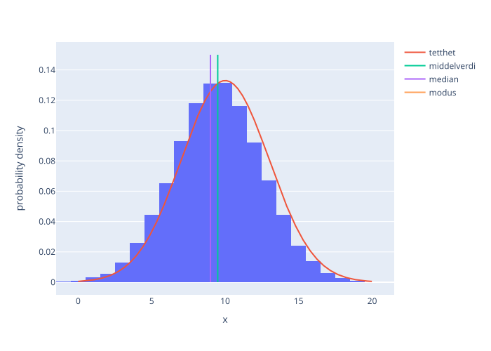
For data med skjeve fordelinger eller med uteliggere er medianen mer robust fordi den ikke påvirkes av ekstremverdier og gir et bedre bilde av den «typiske» verdien.
## asymmetric distribution
n=10000
distr = stats.lognorm(s=1, loc=0, scale=10)
# data
data = distr.rvs(size=n, random_state=0).astype(int)
dmax = 0.1
# density
xx = np.arange(0, 50, .02)
yy = distr.pdf(x=xx)
# figure
fig = px.histogram(x=data, histnorm="probability density")
fig.add_trace(go.Scatter(x=xx, y=yy, mode='lines', name='tetthet'))
fig.add_trace(go.Scatter(x=[np.mean(data), np.mean(data)], y=[0, dmax], mode='lines', name='middelverdi'))
fig.add_trace(go.Scatter(x=[np.median(data), np.median(data)], y=[0, dmax], mode='lines', name='median'))
fig.add_trace(go.Scatter(x=[stats.mode(data, keepdims=True)[0], stats.mode(data, keepdims=True)[0]], y=[0, dmax], mode='lines', name='modus'))
fig.update_layout(xaxis_range=[0,50])
fig.show()
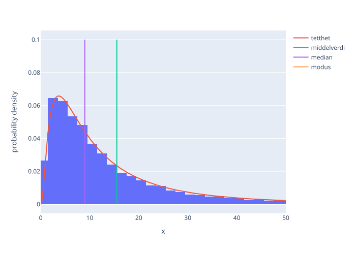
For kategoriske data eller multimodale fordelinger er modus ofte mest nyttig fordi det identifiserer den hyppigst forekommende verdien.
## multimodal distribution
n=1000
distr_1 = stats.norm(loc=0, scale=3)
distr_2 = stats.norm(loc=10, scale=3)
# data
data = np.hstack((distr_1.rvs(size=n, random_state=1).astype(int),
distr_2.rvs(size=n, random_state=2).astype(int)))
dmax = 0.15
# density
xx = np.arange(-15, 25, .02)
yy = 0.5*(distr_1.pdf(x=xx) + distr_2.pdf(x=xx))
# figure
fig = px.histogram(x=data, histnorm="probability density")
fig.add_trace(go.Scatter(x=xx, y=yy, mode='lines', name='tetthet'))
fig.add_trace(go.Scatter(x=[np.mean(data), np.mean(data)], y=[0, dmax], mode='lines', name='middelverdi'))
fig.add_trace(go.Scatter(x=[np.median(data), np.median(data)], y=[0, dmax], mode='lines', name='median'))
fig.add_trace(go.Scatter(x=[stats.mode(data, keepdims=True)[0], stats.mode(data, keepdims=True)[0]], y=[0, dmax], mode='lines', name='modus'))
fig.show()
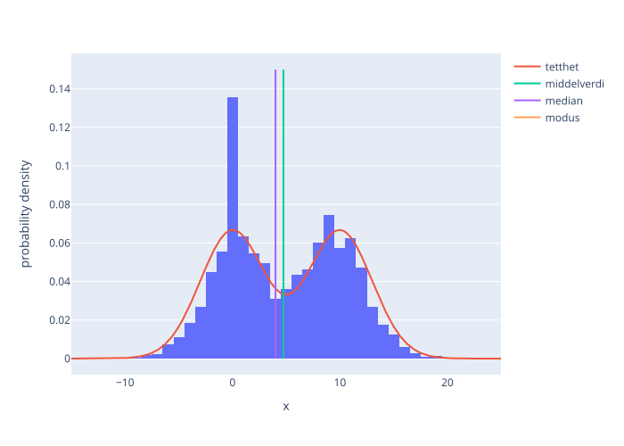
Her er det noen eksempler med hvilket lokaliseringsmål man typisk ville brukt:
Lønn i en bedrift: Medianen brukes ofte for å beskrive lønnsnivået, siden middelverdien kan påvirkes kraftig av noen få svært høye lønninger.
Karakterer på en eksamen: Middelverdien kan brukes hvis karakterene er rimelig symmetrisk fordelt, mens medianen kan være bedre hvis det er noen få svært lave eller høye karakterer.
Kundeinnsikt: Hvis du analyserer hvilken produktstørrelse som er mest populær blant kundene, vil modusen ofte være det beste lokaliseringsmålet.
Store talls lov#
Store talls lov er et viktig teorem i sannsynlighetsteori som beskriver hvordan middelverdien av et stort antall uavhengige og likt fordelte stokastiske variabler vil nærme seg forventningsverdien av den enkelte variabelen etter hvert som antallet observasjoner øker. Mer presist har vi følgende:
Store talls lov: Hvis \(X_0, X_1, X_2, \dots\) er en uendelig følge uavhengige, likt fordelte, stokastiske variabler med forventningsverdi \(\mu < \infty\), så er
\[\operatorname {P} \left(\lim _{n\rightarrow \infty }{\frac{1}{n+1} \sum_{i=0}^{n} X_i}=\mu \right)=1.\]
Eksempel: Tenk deg at du kaster en rettferdig mynt mange ganger. Utfallet \(X_i\) kan være 1 (krone) eller 0 (mynt), og forventningsverdien \(\mu\) for hver kast er 0.5 (siden det er like sannsynlig å få krone som mynt). Middelverdien av 10 kast kan variere betydelig fra 0.5, mens middelverdien av 10000 kast vil ligge veldig nært 0.5.
N = 10000
rng = np.random.RandomState(1)
X = rng.binomial(1, 0.5, N)
n_observasjoner = np.arange(1, N+1)
gjennomsnitt = np.cumsum(X) / n_observasjoner
fig = px.line(x=n_observasjoner,
y=gjennomsnitt,
labels={'x': 'antall observasjoner', 'y': 'middelverdi'},
range_y=[0, 1])
fig.show()
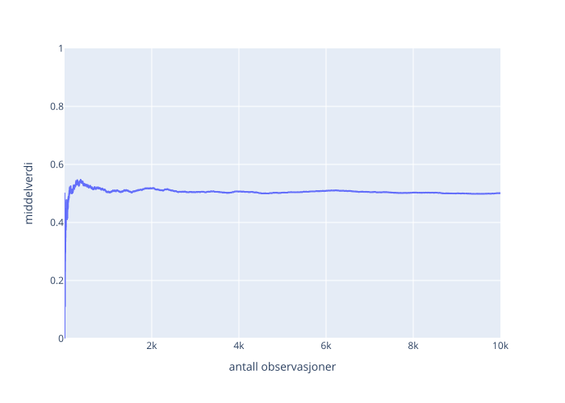
Her ser vi eksempelet om middelverdien av myntkast. Vi ser at det er mye støy når vi har få myntkast og at middelverdien stabiliserer seg jo flere observasjoner vi har.
Mer generelt, så sier store talls lov at jo flere observasjoner en har, desto nærmere vil middelverdien av observasjonene være den sanne forventningsverdien. Når datamengden øker, vil middelverdien bli mindre påvirket av uteliggere og gi en mer nøyaktig representasjon av den sentrale tendensen i dataene.
Med andre ord gir store talls lov en teoretisk støtte for å bruke middelverdien som et pålitelig mål på sentral tendens i store datasett. Samtidig, når dataene er sterkt skjeve eller har mange uteliggere, kan andre mål som median være mer hensiktsmessige.
Spredningsmål#
Når vi har funnet hvor data er lokalisert, så har vi allerede sett at det finnes mange fordelinger med samme lokaliseringsmål, men som kan være veldig forskjellige. Her er noen eksempler med normalfordelte data.
mu = 2
sigmas = [0.2, 0.5, 1, 2, 5]
N = 1001
x = np.linspace(mu-5, mu+5, N)
fx = [stats.norm(mu, sigma).pdf(x) for sigma in sigmas]
df = pd.DataFrame(np.array([x] + fx).T, columns = ['x'] + sigmas)
df_fig = pd.melt(df, id_vars='x', var_name='sigma', value_name='tetthet')
fig = px.line(df_fig, x='x', y='tetthet', color='sigma')
fig.show()
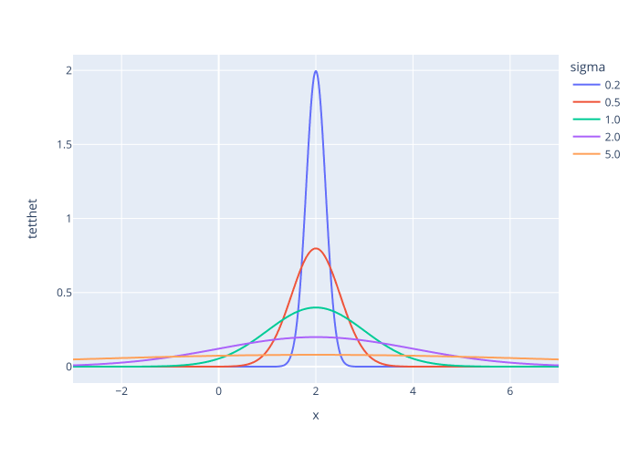
Husk at variansen til normalfordelingen er \(\sigma^2\).
Hvis vi prøver å estimere variansen fra data, så må vi først regne ut middelverdien som approksimasjon av forventningsverdien. Så kan vi regne ut gjennomsnittig kvadrert avstand til mean for å approksimere variansen. Vi bruker ofte symbolene \(\widehat{\mu}\) for middelverdien og \(\widehat{\sigma}^2\) for empirisk varians. De regnes ut som
og
Et annet mål for variasjon er kvartilbredde. Det er intervallet mellom 25%-kvantilen og 75%-kvantilen. Det vil si at 25% av data er lavere enn 25%-kvantilen, 50% av data ligger mellom 25% og 75% kvantilen og 25% av data ligger over 75% kvantilen.
N=50
X = rng.uniform(size=N)
fig = px.scatter(y=X, x=np.repeat(0, N))
fig.add_trace(go.Scatter(x=[-1, 1], y=[np.quantile(X, .25), np.quantile(X, .25)], mode='lines', name='25% quantile'))
fig.add_trace(go.Scatter(x=[-1, 1], y=[np.median(X), np.median(X)], mode='lines', name='median'))
fig.add_trace(go.Scatter(x=[-1, 1], y=[np.quantile(X, .75), np.quantile(X, .75)], mode='lines', name='75% quantile'))
fig.add_trace(go.Scatter(x=[-.3, -.3, -.3], y=[np.quantile(X, .25), np.quantile(X, .75), np.quantile(X, .25)],
marker=dict(symbol="arrow", color="black", size=16, angleref="previous"), showlegend=False))
fig.add_trace(go.Scatter(x=[-0.29], y=[0.42], mode="text", text=["kvartilbredde"], textposition="top right", showlegend=False))
#fig.add_trace(go.Box(y=X))
fig.show()
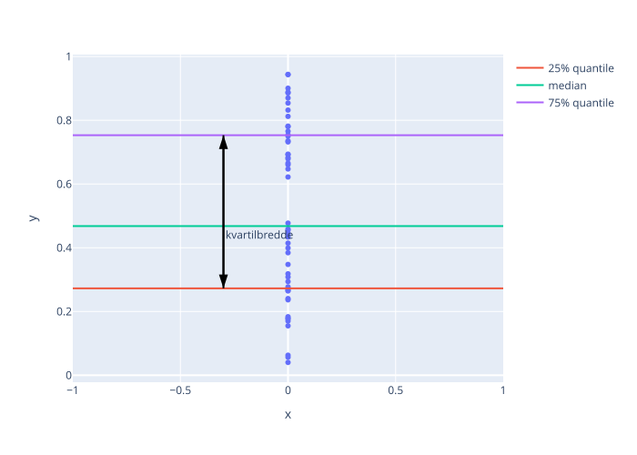
Hvordan velger vi hvilket spredningsmål vi skal bruke?
Husk at empirisk varians defineres gjennom middelverdien og median er et kvantil. Så hvis vi bruker middelverdien som lokaliseringsmål, så bruker vi empirisk varians som spredningsmål.
Hvis vi bruker median som lokaliseringsmål, bruker vi kvartilbredde som spredningsmål.
Sentralgrenseteoremet#
Hvis vi har uavhengige, likt fordelte stokastiske variabler, så konvergerer forskjellen mellom middelverdien og forventningsverdien til en normalfordeling med forventningsverdi 0 og standardavvik lik standardavviket av fordelingsfunksjonen delt på kvadratroten av antall observasjoner.
Sentralgrenseteoremet: Hvis \(X_0, X_1, X_2, \dots\) er en uendelig følge uavhengige, likt fordelte, stokastiske variabler med forventningsverdi \(\mu < \infty\) og varians \(\sigma^2<\infty\), så er
\[ \lim_{n \to \infty} \sqrt{n} \left( \frac{1}{n+1} \sum_{i=0}^{n} X_i - \mu \right) \]normalfordelt med forventningsverdi \(0\) og standardavvik \(\sigma\).
Hva betyr dette i praksis?
Anta at vi observerer mange utvalg fra samme fordelingen og regner ut middelverdien fra hver utvalg. Hvis hver utvalg består bare av én observasjon, så er de middelverdiene ikke normalfordelt. Men når har flere observasjonen per utvalg, så blir de normalfordelte. Standardavviket kan brukes for å tilnærme oss usikkerheten av en middelverdi.
Det gjør vi ved hjelp av konfidensintervaller. Middelverdier tilnermer forventningsverdier, men hvor sikre er vi på estimatet av forventningsverdien?
Når vi for eksempel ser på høyde i befolkningen, så har den en forventningsverdi. Men hvis vi tar en tilfeldig utvalg av befolkningen så får vi en middelverdi som er annerledes enn forventningsverdien. Og hvis vi tar forskjellige utvalg får vi forskjellige middelverdier. Det kalles for samplingsfeil.
Størrelsen for konfidensintervallet avhenger av både variasjon og utvalgsstørrelse. Det kan vi lese av sentralgrenseteoremet. Det bør også være intuitivt. En liten utvalg er mindre sikkert en en stor utvalg. Og hvis variasjonen i populasjonen er stor, så blir også variasjonen i forskjellige utvalg stor.
Et 95% konfidensinterval for forventningsverdien er \((\widehat{\mu} - 1.96 \frac{\widehat{\sigma}}{\sqrt{n}}, \widehat{\mu} + 1.96 \frac{\widehat{\sigma}}{\sqrt{n}})\). Merk at for standard-normalfordelingen er \(F(-1.96) = 0.025\) og \(F(1.96) = 0.975\). Hvis vi tar 100 tilfeldige utvalg fra befolkningen og regner ut 95% konfidensintervalet for hver av dem, så forventer vi at 95 av konfidensintervalene inneholder forventningsverdien.
Korrelasjon#
Korrelasjon beskriver styrken og retningen på en lineær sammenheng mellom to variabler \(X\) og \(Y\). Hvis to variabler er korrelert, betyr det at endringer i den ene variabelen er forbundet med endringer i den andre.
Positiv korrelasjon betyr at når den ene variabelen øker, øker også den andre variabelen. For eksempel kan det være en positiv korrelasjon mellom antall timer studert og eksamensresultater. Negativ korrelasjon betyr at når den ene variabelen øker, reduseres den andre variabelen. For eksempel kan det være en negativ korrelasjon mellom mengden stress og kvaliteten på søvn. Hvis det ikke er noen klar sammenheng mellom de to variablene, sier vi at det er ingen korrelasjon.
Korrelasjonen måles ved hjelp av Pearsons korrelasjonskoeffisienten \(r\), som varerer mellom -1 og 1. Hvis \(r=1\), så er variablene perfekt positivt korrelert, hvis \(r=-1\) er de perfekt negativt korrelert.
Korrelasjon sier ikke noe om årsakssammenheng; det viser bare at det er en sammenheng mellom to variabler.
Her kommer forskjellige eksempler.
N=100
x = rng.uniform(0, 1, N)
y = 0.1 * x
fig = px.scatter(x=x, y=y,
title = r'Korrelasjon {}'.format(np.corrcoef(x, y)[0, 1].round(2)))
fig.show()
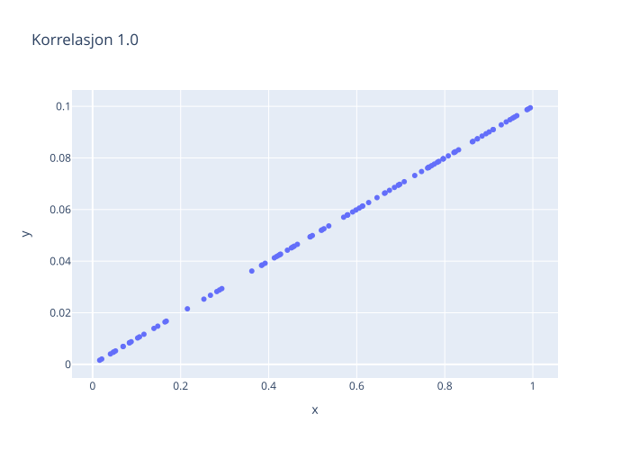
N=100
x = rng.uniform(0, 1, N)
y = -2*x + 0.4*rng.normal(0, 1, N)
fig = px.scatter(x=x, y=y,
title = r'Korrelasjon {}'.format(np.corrcoef(x, y)[0, 1].round(2)))
fig.show()
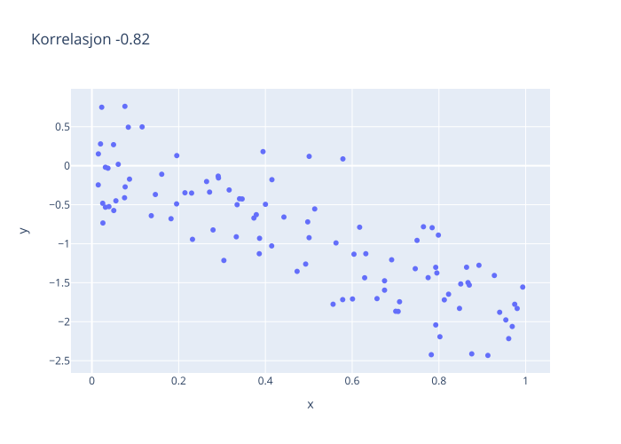
N=100
angle = rng.uniform(0, 2*np.pi, N)
x = np.cos(angle) + rng.normal(0, 0.1, N)
y = np.sin(angle) + rng.normal(0, 0.1, N)
fig = px.scatter(x=x, y=y,
title = r'Korrelasjon {}'.format(np.corrcoef(x, y)[0, 1].round(2)))
fig.show()
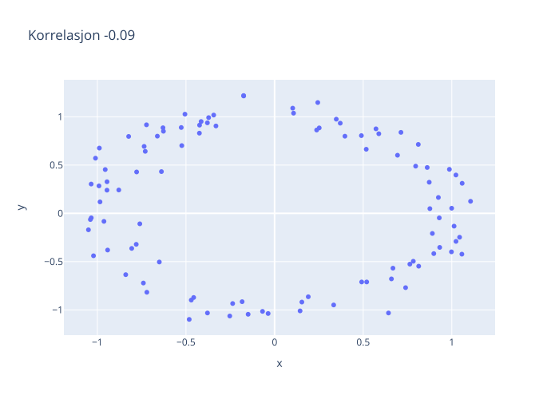
Det siste eksempelet viser også at selv om det er en sammenheng mellom variablene, så er ikke det nødvendigvis en lineær sammenheng, så korrelasjon kan være nesten 0, selv om det er en sterk sammenheng.
Visualisering#
Målet med visualisering er å forstå data bedre. I statistikk har vi beskrevet egenskaper med middelverdien, empirisk varians og korrelasjon. Men det er et kjent problem at det ikke alltid er godt nok. Her er et eksempel som av 6 datasett med samme middelverdi og empirisk varians på både x- og y-aksen og samme korrelasjon.
# data source: 'https://www.openintro.org/data/csv/datasaurus.csv'
df = pd.read_csv('data/datasaurus.csv')
df1 = df.loc[[ds in ['dino', 'star', 'circle', ] for ds in df.loc[:, 'dataset']]]
df2 = df.loc[[ds in ['bullseye', 'dots', 'wide_lines'] for ds in df.loc[:, 'dataset']]]
for df in [df1, df2]:
fig = px.scatter(df, x="x", y="y", facet_col="dataset")
fig.show()
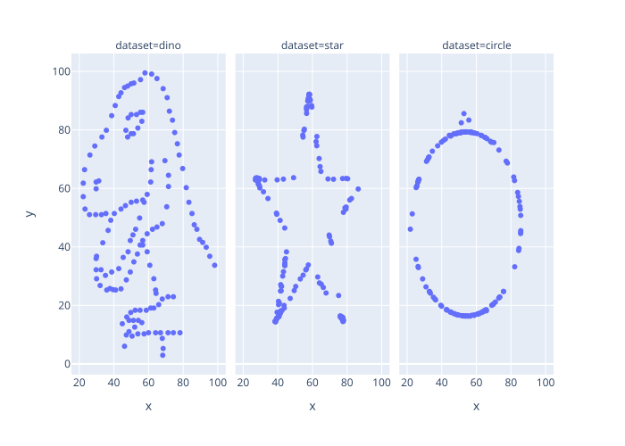
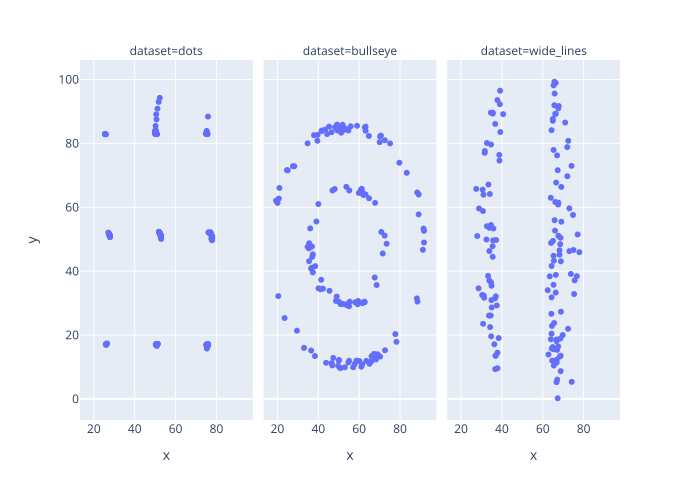
Det eksempelet viser hvor viktig det er å visualisere data. For eksempel ser vi her en dinosaur og en stjerne og mange andre helt forskjellige dataset som har samme middelverdi og empirisk varians på både x- og y-aksen og samme korrelasjon. Likevel får vi helt forskjellige mønstre. Men visuelt kan vi enkelt se forskjellen. Det viser at vi kan gå glipp av masse viktig informasjon hvis vi bare ser på statistiske mål og ikke visualiserer data.
Univariate data#
Først ser vi på visualisering av univariate data. Univariate data betyr at vi vil visualisere fordelingen av én variabel om gangen. Det er ofte lurt å se på alle variablene hver for seg og lage en univariat visualisering av alle variablen.
Kategoriske data er enkle å visualisere med et søylediagram. Alle klassene er representerte på x-aksen og det er en søyle per klasse. Høyden av søylen viser proporsjonen av denne klassen. Her ser vi proporsjonene av forskjellige emnenivåer i datasettet om informatikkemner ved UiB (se også Pandas).
df_informatikk = pd.read_csv('data/informatikkemner_uib.csv')
fig = px.histogram(df_informatikk, x="nivå", histnorm='probability density')
fig.update_layout(template="simple_white")
fig.show()
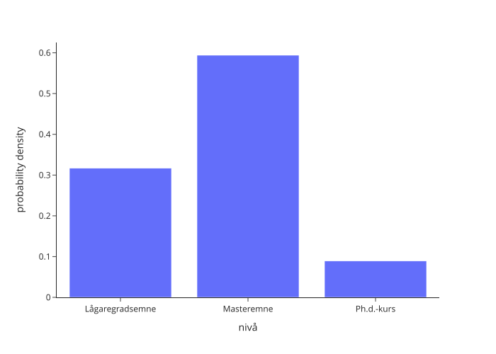
For numeriske data kan vi gjøre noe lignende og lage et histogram. I histogrammet deler vi den numeriske variablen opp i intervaller. Så visualiserer vi en søyle per interval som viser sannsynligheten for å være i dette intervalet. Her ser vi alder av pasasjerer i titanic-datasettet.
df = pd.read_csv('data/datasaurus.csv')
df_dino = df.loc[df.dataset=='dino']
fig = px.histogram(df_dino, x="x", histnorm='probability density', nbins=100)
fig.update_layout(template="simple_white")
fig.show()
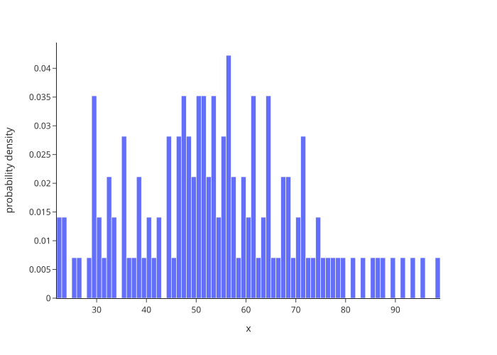
Hvilke intervaller man velger er avgjørende for hvordan histogrammet vil se ut. Her lager vi histogrammer med mange intervaller, litt færre intervaller, og veldig få intervaller.
fig = px.histogram(df_dino, x="x", histnorm='probability density', nbins=20)
fig.update_layout(template="simple_white")
fig.show()
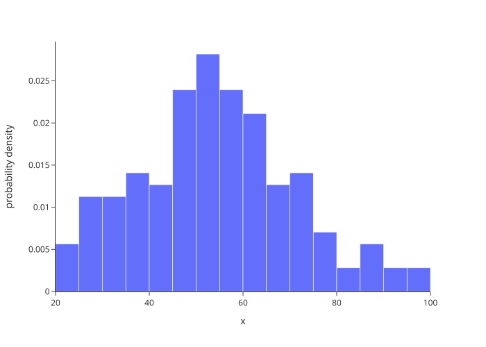
fig = px.histogram(df_dino, x="x", histnorm='probability density', nbins=10)
fig.update_layout(template="simple_white")
fig.show()
Antall intervaller er noe vi må velge og kalles for hyperparameter av metoden. Hvis vi bruker for mange intervaller blir det veldig mye støy. Hvis vi velger for få, så mister vi informasjon.
Et alternativ til histogrammer kan være tetthetsestimater med kjernetetthetsestimering. Vi går ikke gjennom teorien av denne metoden i detalj. Men det har fordelen at det blir et kontinuerlig tetthetsestimat. Som for histogrammer avhenger tetthetsestimatet av en hyperparameter som heter båndbredde. Og som med antall intervaller må vi også velge båndbredde. Hvis vi velger båndbredden for lavt så blir det masse støy og hvis vi velger den for stort så mister vi informasjon.
x = np.linspace(df_dino.x.min(), df_dino.x.max(), 100)
fig = go.Figure()
cols = px.colors.qualitative.Set1
for i, bandbredde in enumerate([0.1, 0.2, 0.5, 1]):
kde = stats.gaussian_kde(df_dino.x, bw_method=bandbredde)
density = kde(x)
fig.add_trace(go.Scatter(x=x, y=density, mode='lines', name=str(bandbredde),
line=dict(color=cols[i+1])))
fig.update_layout(template="simple_white", xaxis_title="x",
yaxis_title="probability density", legend_title_text='båndbredde')
fig.show()
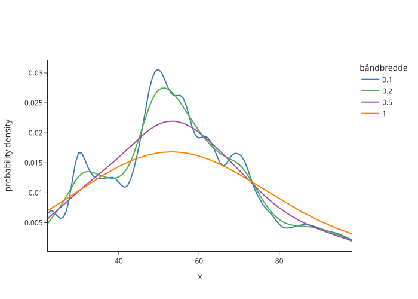
Vi kan også bruke en automatisk metode for å regne ut båndbredder som ofte (men ikke alltid) fungerer ganske bra.
x = np.linspace(df_dino.x.min(), df_dino.x.max(), 100)
fig = go.Figure()
for bandbredde in ['scott', 'silverman']:
kde = stats.gaussian_kde(df_dino.x, bw_method=bandbredde)
density = kde(x)
fig.add_trace(go.Scatter(x=x, y=density, mode='lines', name=bandbredde))
fig.update_layout(template="simple_white", xaxis_title="x",
yaxis_title="probability density", legend_title_text='båndbredde')
fig.show()
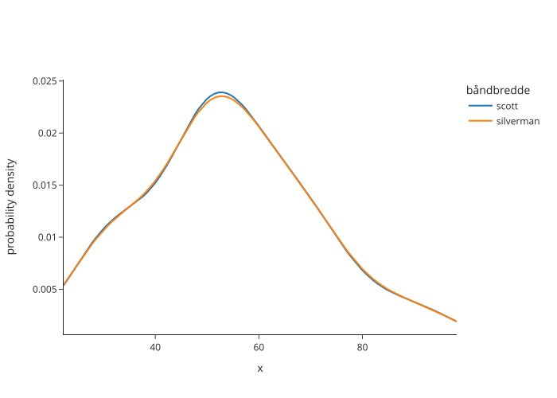
Bivariate data#
Når det er to variabler som vi vil visualisere sammen, så har vi flere muligheter. I så fall, vil vi ofte fokussere visualiseringen på sammenhengen mellom variablene. Igjen har vi ulike visualiseringstyper for diskrete og for kontinuerlige data.
Hvis man har to numeriske variabler, så er den ekleste og kanskje mest brukte figuren scatterplottet. Det er en figur der man setter de to variablene på hver sin akse og så tegner man et punkt for hver datapunkt. I dette eksemplet ser vi igjen dinosaur-dataene.
fig = px.scatter(df_dino, x="x", y="y")
fig.show()
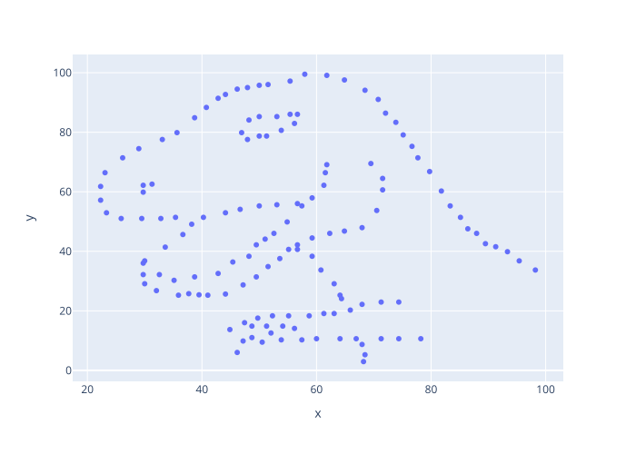
En annen ting man kan gjøre med to numeriske variabler er å bruke en generalisering av kjernetetthetsestimering som vi har sett på univariate data. Her er det altså sånn at jo mørkere blå figuren er, jo tettere ligger data i det området.
fig = go.Figure(go.Histogram2dContour(x=df_dino.x, y=df_dino.y, histnorm='probability density',
colorscale = 'Blues', colorbar_title='tetthet'))
fig.update_layout(template="simple_white", xaxis_title="x", yaxis_title="y")
fig.show()
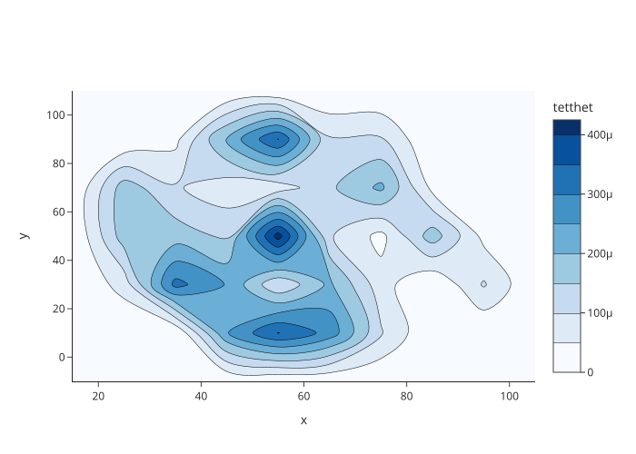
I dette tilfelle er kanskje ikke dette like nyttig som scatterplottet. Men det finnes mange tilfeller, der tetthet er nyttigere enn datapunkter. Spesielt når det er mye data. Her er et eksempel.
N_circle=10000
N_noise=10000
angle = rng.uniform(0, 2*np.pi, N_circle)
radius = rng.normal(1, 0.2, N_circle)
df_circle = pd.DataFrame(dict(x=radius * np.cos(angle), y=radius*np.sin(angle)))
df_noise = pd.DataFrame(rng.uniform(-1.5, 1.5, (N_noise, 2)), columns=('x', 'y'))
df = pd.concat((df_circle, df_noise))
fig = px.scatter(df, x="x", y="y")
fig.show()
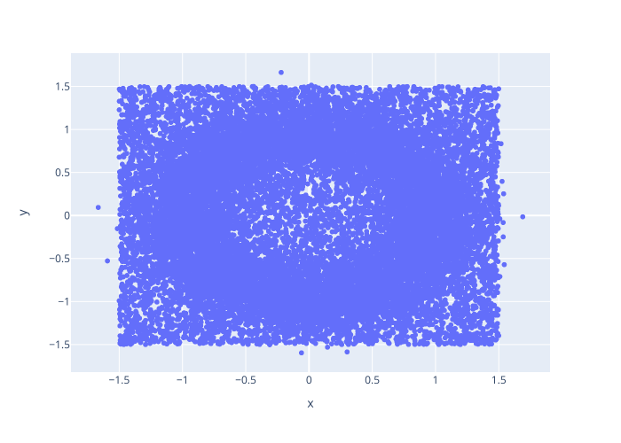
Fra scatterplottet ser vi ikke så mye.
fig = go.Figure(go.Histogram2dContour(x=df.x, y=df.y, histnorm='probability density',
colorscale = 'Blues', colorbar_title='tetthet'))
fig.update_layout(template="simple_white", xaxis_title="x", yaxis_title="y")
fig.show()
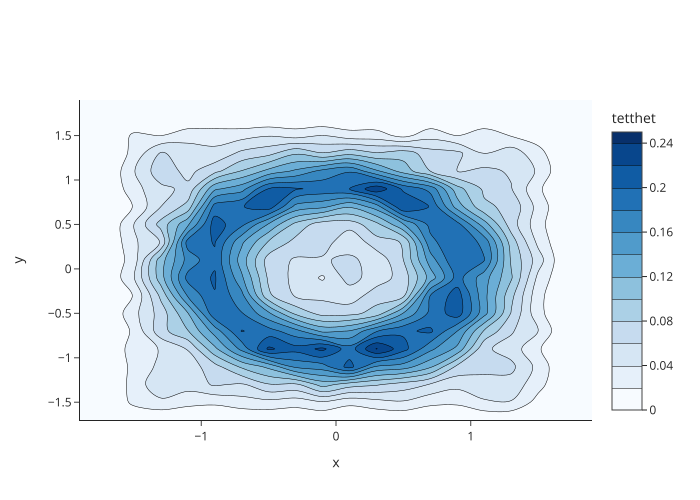
Men tettheten viser veldig tydelig at data kommer fra en sirkel med mye støy.
Når vi har tidsdata så er det vanlig å bruke en linjeplott. Linjeplottet er som en scatterplott, der påfølgende datapunkter er forbunnet med en linje. Så hva er fordelen med dette? Linjeplottet fokuserer på lokale endringer. Denne figuren viser for eksempel forventet levealder i Norge gjennom årene.
df = px.data.gapminder().query("country=='Norway'")
fig = px.line(df, x="year", y="lifeExp", title='Forventet levealder i Norge', markers=True)
fig.update_layout(template="simple_white", xaxis_title="år", yaxis_title="forventet levealder")
fig.update_traces(line=dict(width=5), marker=dict(size=15))
fig.show()
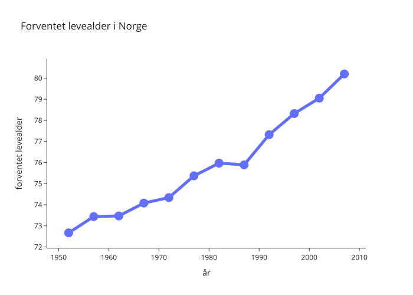
På grunn av linjen kan vi enkelt se at økningen i forventet levealder var relativt konstant mellom 1950 og 1990 og har blitt brattere mellom 1990 og 2010. Dette hadde vært vanskelig å se i en scatterplott.
For kategoriske data kan vi enkelt utvide søylediagrammer til å visualisere to egenskaper ved hjelp av farge. Vi bruker x-aksen for den ene kategoriske variablen og fargen for å visualisere den andre.
Her ser vi igjen på data om informatikkemner ved UiB. I tillegg til nivået ser vi også på hvilket semester emnet går. På x-aksen er det nivået som før, på y-aksen er det antall fag og semesteret blir vist med forskjellige farger.
fig = px.histogram(df_informatikk, x="nivå", color='semester',
barmode='group', color_discrete_sequence=px.colors.qualitative.Set1[1:])
fig.update_layout(template="simple_white", yaxis_title_text='antall')
fig.show()
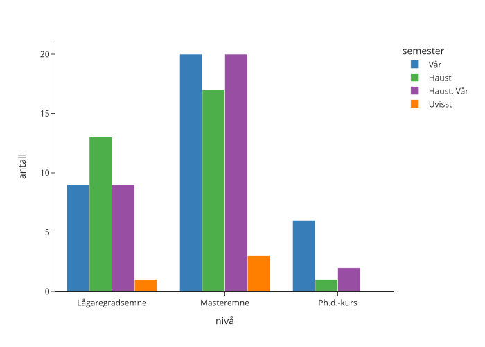
Her ser vi for eksempel at det er flere laveregradsemner på høsten enn på våren, mens det er flere PhD-kurs på høsten enn på våren.
Vi kan også vise semesteret på x-aksen og nivået som farge.
fig = px.histogram(df_informatikk, color="nivå", x='semester',
barmode='group', color_discrete_sequence=px.colors.qualitative.Set1[1:])
fig.update_layout(template="simple_white", yaxis_title_text='antall')
fig.show()
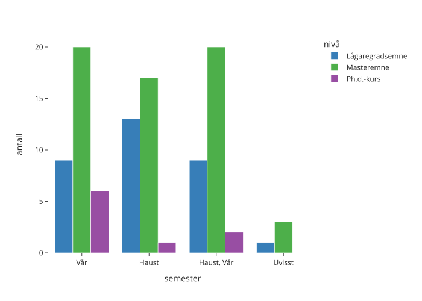
Her ser vi for eksempel at forskjellen mellom antall masteremner og antall laveregradsemner er større om våren enn om høsten.
Valg av hva som visualiseres på x-aksen og hva som visualiseres som farge bør være basert på hvilke sammenligninger som er mest interessante.
Nå har vi sett hvordan å visualisere to numeriske eller to kategoriske variabler. Men hva om vi har en numerisk og en kategorisk variabel? I så fall bruker vi ofte en boxplot. Den viser median, kvartilbredde, og minimum og maksimum av den numeriske variablen for hver klasse. Hvis maksimum er større enn 1.5 gang kvartilbredde høyere enn 75% kvantilen, så vises det i stedet og alt som ligger høyere blir vist som uteliggere. Det samme gjøres for minimum.
Her ser vi på datasettene med samme middelverdi og empirisk varians på både x- og y-aksen og samme korrelasjon. Vi ser kun på x-aksen og prøver å sammenligne de forskjellige datasett på en enkel måte.
df = pd.read_csv('data/datasaurus.csv')
df = df.loc[[ds in ['dino', 'star', 'circle', 'bullseye', 'dots', 'wide_lines'] for ds in df.loc[:, 'dataset']]]
fig = px.box(df, y="x", x='dataset')
fig.update_layout(template="simple_white", xaxis_title="datasett")
fig.show()
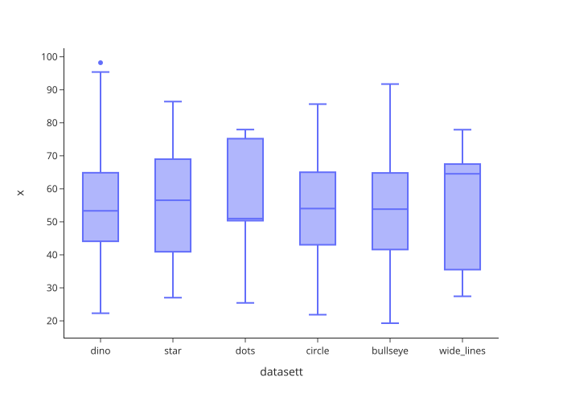
Her ser vi at selv om de hadde samme middelverdi, så kan median varere en god del. For eksempel datasettet ’dots’ har median som er nesten lik 25%-kvantil. Datasettet ’wide_lines’ på den andre siden har en median som ligger mye nærmere 75%-kvantilen enn 25%-kvantilen.
Multivariate data#
Når vi vil visualisere flere variabler samtidig, så prøver vi å få oversikt over helheten av variablene.
Hvis vi bare har én ekstra dimensjon, så kan den ofte visualiseres ved hjelp av farge. Det kan gjøres for scatterplott, linjeplott, og boxplot.
Men hvis vi har flere variabler blir ikke det like enkelt. En strategi er å lage en scattermatrisse, som egentlig bare er kombinasjonen av mange scatterplotts. For hver par av variabler lages det en scatterplott. Det er en grei visualisering for numeriske data så lenge at vi ikke har for mange variabler. Men det kan fort bli veldig uoversiktelig for mange variabler.
Her ser vi på et datasett av diabetespasienter med variabler alder (age), kjønn (sex), kroppsmasseindeks (bmi), blodtrykk (bp), serum kolesterol (s1), lipoproteiner med lav tetthet (s2), lipoproteiner med høy tetthet (s3), total kolesterol (s4), triglyseridsnivå (s5), blodsukker (s6). Alle variablene er standardiserte slik at de har samme middelverdi og empirisk varians.
df_diabetes = load_diabetes(as_frame=True)['data']
fig = px.scatter_matrix(df_diabetes,
dimensions=df_diabetes.select_dtypes('number').columns)
fig.update_layout(template="plotly_white")
fig.show()
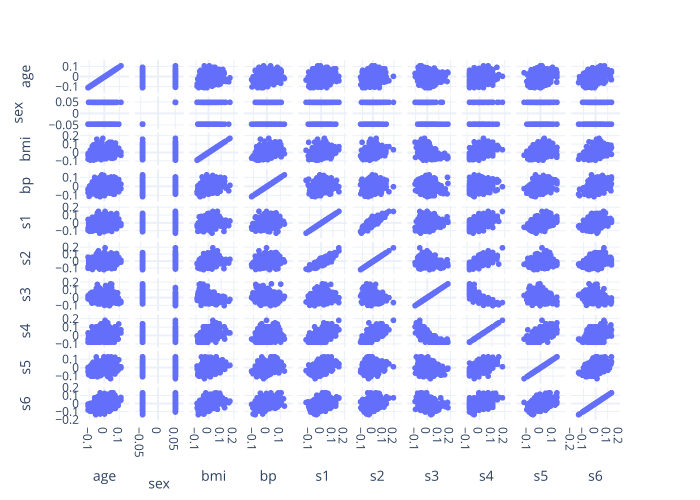
Et alternativ som kan fungere i noen tilfeller er å bruke parallelle koordinater. Der lager vi en akse for hver variabel parallelt til hverandre. Så lager vi en linje for hver datapunkt som forbinner alle variablene. Det kan være en effektiv visualisering. Men her må vi huske at visualiseringen avhenger sterkt av rekkefølgen av aksene, så de må velges forsiktig.
fig = px.parallel_coordinates(df_diabetes,
dimensions=df_diabetes.select_dtypes('number').columns)
fig.update_layout(template="plotly_white")
fig.show()
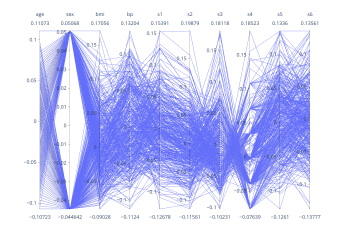
Men også dette fungerer ikke bra for for mange dimensjoner. Der må vi bruke dimensjonalitetsreduksjon. Det vil si at vi reduserer dimensjonen av data, sånn at vi kan vise de i en vanlig scatterplott.
Det finnes mange dimensjonalitetsreduksjonsmetoder og de har alle litt forskjellige egeneskaper. Men i dette kurset kommer vi ikke til å se nærmere på de. Det viktigste å huske er at alle dimensjonalitetsreduksjoner endrer på data, så det kan kun brukes for å få intuisjon for data. Her viser vi hva som skjer når vi bruker dimensjonalitetsreduksjonsmetoden PCA på diabetes-datasettet.
from sklearn.decomposition import PCA
pca = PCA(n_components=2)
reduced = pca.fit_transform(df_diabetes.select_dtypes('number'))
fig = px.scatter(x=reduced[:, 0], y=reduced[:, 1])
fig.update_layout(template="plotly_white", xaxis_title="PC1", yaxis_title="PC2")
fig.show()
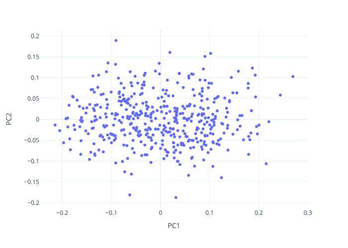
Dette er vanskelig å tolke. Hva skjer hvis vi bruker dimensjonalitetsreduksjonsmetoden tSNE i stedet?
from sklearn.manifold import TSNE
tsne = TSNE(random_state=42)
reduced = tsne.fit_transform(df_diabetes.select_dtypes('number'))
fig = px.scatter(x=reduced[:, 0], y=reduced[:, 1])
fig.update_layout(template="plotly_white", xaxis_title="tSNE1", yaxis_title="tSNE2")
fig.show()
/Users/ppa045/anaconda3/envs/dsbook/lib/python3.11/site-packages/sklearn/manifold/_t_sne.py:800: FutureWarning:
The default initialization in TSNE will change from 'random' to 'pca' in 1.2.
/Users/ppa045/anaconda3/envs/dsbook/lib/python3.11/site-packages/sklearn/manifold/_t_sne.py:810: FutureWarning:
The default learning rate in TSNE will change from 200.0 to 'auto' in 1.2.
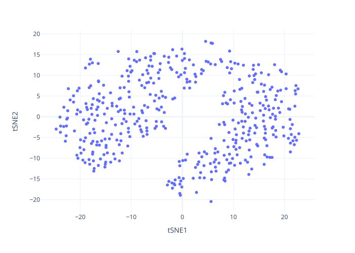
Hvis vi bruker tSNE på diabetes-data, så ser vi to forskjellige klustre. Kan vi gjette hva klustre betyr?
fig = px.scatter(x=reduced[:, 0], y=reduced[:, 1], color=pd.Categorical(df_diabetes.sex))
fig.update_layout(template="plotly_white", xaxis_title="tSNE1", yaxis_title="tSNE2")
fig.show()
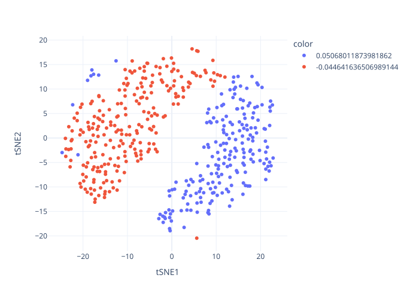
I stor grad har tSNE valgt å bruke kjønn for å dele data i to grupper. Det viser også at man bør være forsiktig når man interpreterer resultater fra dimensjonalitetsreduksjon. Det er ofte nyttig å fargelegge resultatene fra dimensjonalitetsreduksjon etter forskjellige variabler for å finne ut hva som er ansvarlig for mønstre vi ser.
Viktige elementer#
Her nevner vi noen elementer som alle figurer bør inneholde.
La oss se på denne figuren som beskriver utviklingen av forventet levealder i Norge, Sverige og Danmark.
Det første viktige elementet som alltid må være med er aksebeskrivelser. I tillegg til en beskrivelse av hele aksen må vi ha nok verdier på aksene. Uten verdier blir det ikke mulig å vite om det er utviklingen mellom 1910 og 1920 eller mellom 1950 og 2010. Denne beskrivelsen av aksene trenger vi for alle figurtyper som vi skal se på. For figurer som inneholder farger, så trenger vi i tillegg en fargeskala som beskriver betydningen av fargene.
df = px.data.gapminder().query("country in ['Norway', 'Denmark', 'Sweden']")
fig = px.line(df, x="year", y="lifeExp", title='Forventet levealder i Skandinavia over tid',
markers=True, color='country', color_discrete_sequence=px.colors.qualitative.Set1[1:])
fig.update_layout(template="simple_white", xaxis_title="år", yaxis_title="forventet levealder (år)")
fig.update_traces(line=dict(width=5), marker=dict(size=15))
fig.show()
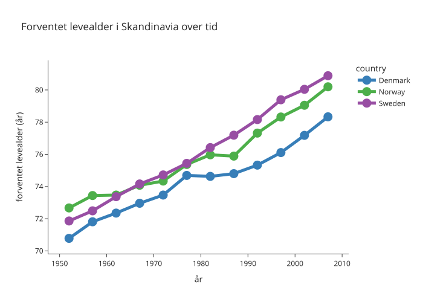
Farger#
Til slutt må vi se litt på farger. Det finnes tre typer fargeskala, kvalitative, sekvensielle eller divergerende.
Vi bruker kvalitative fargeskala når variablen vi fargelegger er nominal. I eksempelet der vi ser på utvikling av forventet levealder over tid i forskjellige land, så er landet en nominal variabel, så vi bruker en kvalitativ skala. Her er noen eksempler av kvalitative fargeskalaer. Flere kan du se på ved hjelp av px.colors.qualitative.swatches().
sequences = [
('Plotly', px.colors.qualitative.Plotly),
('D3', px.colors.qualitative.D3),
('Set1', px.colors.qualitative.Set1),
('Vivid', px.colors.qualitative.Vivid),
]
# from https://github.com/plotly/plotly.py/blob/master/packages/python/plotly/_plotly_utils/colors/_swatches.py
fig = go.Figure(
data=[
go.Bar(
orientation="h",
y=[name] * len(colors),
x=[1] * len(colors),
customdata=list(range(len(colors))),
marker=dict(color=colors),
)
for name, colors in reversed(sequences)
],
layout=dict(
template='plotly_white',
barmode="stack",
barnorm="fraction",
bargap=0.5,
showlegend=False,
xaxis=dict(range=[-0.02, 1.02], showticklabels=False, showgrid=False),
)
)
fig.show()
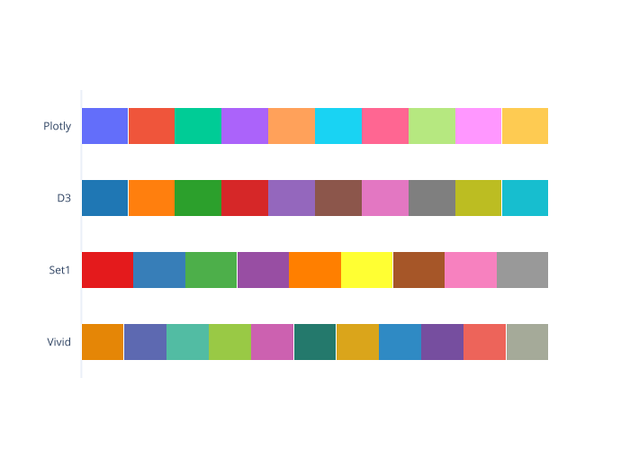
Vanligvis bruker vi sekvensielle fargeskala for numeriske eller ordinale data. Her er noen eksempler av sekvensielle fargeskalaer. Flere kan du se på ved hjelp av px.colors.sequential.swatches_continuous().
sequences = [
('Plotly3', px.colors.sequential.Plotly3),
('Viridis', px.colors.sequential.Viridis),
('Reds', px.colors.sequential.Reds),
('PuBuGn', px.colors.sequential.PuBuGn),
]
# from https://github.com/plotly/plotly.py/blob/master/packages/python/plotly/_plotly_utils/colors/_swatches.py
def sequential_figure(sequences):
n = 100
return go.Figure(
data=[
go.Bar(
orientation="h",
y=[name] * n,
x=[1] * n,
customdata=[(x + 1) / n for x in range(n)],
marker=dict(color=list(range(n)), colorscale=name, line_width=0),
name=name,
)
for name, colors in reversed(sequences)
],
layout=dict(
barmode="stack",
barnorm="fraction",
bargap=0.3,
showlegend=False,
xaxis=dict(range=[-0.02, 1.02], showticklabels=False, showgrid=False),
template='plotly_white',
margin=dict(b=10),
),
)
fig = sequential_figure(sequences)
fig.show()
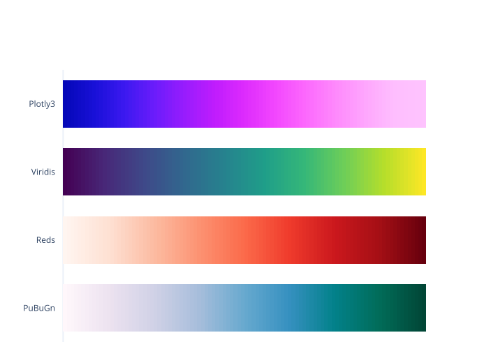
Vi bruker en divergerende fargeskala hvis det er et meningsfullt midtpunkt i numeriske eller ordinale data og for å understreke ytterpunktene. Et typisk eksempel er korrelasjon, der 0 korrelasjon er et naturlig midpunkt og vi kan være mest interesserte i sterkt positivt eller negativt korrelerte variabler.
Her er noen eksempler av divergerende fargeskalaer. Flere kan du se på ved hjelp av px.colors.diverging.swatches_continuous().
sequences = [
('BrBG', px.colors.diverging.BrBG),
('RdBu', px.colors.diverging.RdBu),
('balance', px.colors.diverging.balance),
('Tropic', px.colors.diverging.Tropic)
]
fig = sequential_figure(sequences)
fig.show()
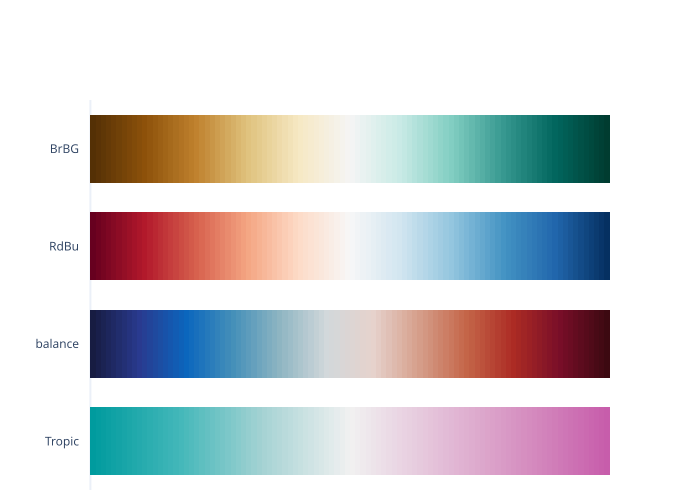
I tillegg til valg av fargeskala, så er det én ting til vi alltid bør tenke på når vi velger ut farger. Vi bør aldri bruke rød og grønn i samme figuren. Mer enn 99% av alle fargeblinde mennesker lider av rød-grønn fargesynsmangel. Rundt 8% av alle menn og 0.5% av alle kvinner lider av det. Det er enkelt å ungå å bruke begge de to fargene i samme figuren.